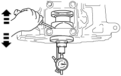
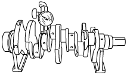
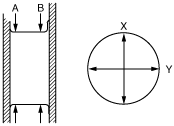
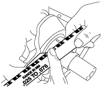

L8/LF/L3/L5 [Engine WM] ➭ ENGINE ➭ MECHANICAL ➭ CRANKSHAFT INSPECTION
id011000502500
1. Install the main bearing cap. (See CYLINDER BLOCK ASSEMBLY (I).)
2. Measure the crankshaft end play.
• If it exceeds the specification, replace the thrust bearing or crankshaft so that the specified end play is obtained.
|
 belbze00000110 |
Standard end play
0.22—0.45 mm {0.0087—0.0177 in}
Maximum end play
0.55 mm {0.022 in}
3. Remove the main bearing cap. (See CYLINDER BLOCK DISASSEMBLY (II).)
4. Measure the crankshaft runout.
• If it exceeds the specification, replace the crankshaft.
|
 belbze00000111 |
Maximum runout
0.05 mm {0.0019 in}
5. Measure the journal diameter in X and Y directions at the two points (A and B) as indicated in the figure.
• If it exceeds the specification, replace the crankshaft or grind the journal and install the undersize bearing.
|
 belbze00000112 |
Main journal diameter
STD: 51.980—52.000 mm {2.0465—2.0472 in}
OS 0.25: 51.730—51.750 mm {2.0367—2.0374 in}
OS 0.50: 51.480—51.500 mm {2.0268—2.0275 in}
Maximum main journal off-round
0.05 mm {0.0019 in}
Crank pin diameter
L8, LF
STD: 46.980—47.000 mm {1.8497—1.8503 in}
OS 0.25: 46.730—46.750 mm {1.8398—1.8405 in}
OS 0.50: 46.480—46.500 mm {1.8300—1.8307 in}
L3
STD: 49.980—50.000 mm {1.9677—1.9685 in}
OS 0.25: 49.730—49.750 mm {1.9579—1.9586 in}
OS 0.50: 49.480—49.500 mm {1.9481—1.9488 in}
L5
STD: 51.980—52.000 mm {2.0465—2.0472 in}
OS 0.25: 51.730—51.750 mm {2.0367—2.0374 in}
OS 0.50: 51.480—51.500 mm {2.0268—2.0275 in}
Maximum crank pin off-round
0.05 mm {0.0019 in}
6. Install the main bearing caps and crankshaft. (See CYLINDER BLOCK ASSEMBLY (I).)
7. Position a plastigauge atop the journals in the axial direction.
8. Install the main bearing caps and cylinder block. (See CYLINDER BLOCK ASSEMBLY (I).)
9. Remove the main bearing caps. (See CYLINDER BLOCK DISASSEMBLY (II).)
10. Measure the main journal oil clearance.
• If it exceeds the specification, replace the main bearing using the main bearing selection table or grind the main journal and install the oversize bearings so that the specified oil clearance is obtained.
|
 belbze00000113 |
Standard clearance
0.016—0.039 mm {0.0007—0.0013 in}
Maximum clearance
0.10 mm {0.0039 in}
Upper main bearing size
STD: 2.501—2.522 mm {0.09847—0.09929 in}
OS 0.25: 2.623—2.629 mm {0.1033—0.1035 in}
OS 0.50: 2.748—2.754 mm {0.1082—0.1084 in}
Lower main bearing size
STD: 2.501—2.529 mm {0.09847—0.09956 in}
OS 0.25: 2.624—2.630 mm {0.1034—0.1035 in}
OS 0.50: 2.749—2.755 mm {0.1082—0.1084 in}